Kampala, Uganda. Open to remote and international work.
Data scientist and ML engineer
Johnson Mugarra
Six years turning field data into evidence across East Africa and the Horn. Right now that means evaluation research for UN agencies and international NGOs, and the data system behind a vanilla and coffee agribusiness. Earlier, health programme evaluation for USAID and harvest forecasting for Uganda's Ministry of Agriculture.
- In the field
- 6+ yrs
- Organisations served
- 15+
- Peer-reviewed papers
- 2
- 18%
- Forecast error cut on the MAAIF vanilla model
- 10days
- USAID SITES evaluation cycle, down from 6 weeks
- 95%+
- Data reliability across SITES quality audits
- 7
- Automated pipelines running at Enimiro


Background
I began in management consulting at Bronkar Uganda, designing M&E frameworks and the digital collection tools that fed them. From there I moved into evaluation research for international non-profits, working on assessments for USAID, UNDP, IRC and others across East Africa.
The questions that mattered most in that work were causal ones: whether a programme changed an outcome, or whether the outcome would have moved anyway. Answering that properly needs more than descriptive statistics, which is what took me to the M.Sc. in Data Science: machine learning, natural language processing, computer vision and Bayesian inference, with enough time on each to understand what the standard implementations are doing underneath.
At USAID SITES I ran programme evaluation and auditing across USAID-funded health projects in Uganda: President's Malaria Initiative activities, and the DHIS2 and electronic medical records transition for HIV care, working with hospitals in the Eastern, Central and Northern regions alongside Makerere University. Over the same period, at MAAIF and Makerere, I built a forecasting platform for Uganda's vanilla export sector that combined NASA POWER climate data with ground measurements and cut forecast error by 18%.
Two roles at present, both remote. At the Center for Research and Communication I lead the data and analytics behind evaluation consultancies for UN agencies and international NGOs, covering education quality and teaching practice, child protection, sexual and reproductive health and the cultural norms surrounding gender-based violence, food security and household livelihoods. At Enimiro I build the farmer data system, yield models and plot maps behind a vanilla and coffee agribusiness. Certified in Power BI, SAS, Tableau and Google project management.
Depth
ML, NLP, computer vision and Bayesian inference, from the statistics underneath to running a model in production.
Impact
18% less forecast error. Evaluation cycles cut from 6 weeks to under 10 days. Data-quality audits held at 95%+.
Value
The workdone on different project especially the recent one, it has presented value especially to the exporters of Vanilla. Considering the quality requirements normally set by certification bodies like Control Union and Rainforest Alliance, mandates it that decision based on data can be verified and trusted.
Recognition
Co-author on peer-reviewed agronomy research in Agronomy (MDPI) and Advances in Agriculture (Wiley). Presented the vanilla forecasting work at a national policy forum in Kampala.
Experience
-
Nov 2025 to present
Research and Data Consultant
Enimiro, remote
Consult on the data system for a vanilla and coffee agribusiness. Designed and put in place 7 automated pipelines covering SurveyCTO-to-PostgreSQL ETL, purchase and pollination analysis, and inspection follow-ups. I mentor the data management team so they can run it without me, and lead standalone studies.
-
Jan 2025 to present
Research and MEAL Specialist
Center for Research and Communication (CRC)
Lead the data and analytics behind evaluation consultancies for UN agencies and international NGOs, including IRC, UNICEF, World Vision, Save the Children, Danish Refugee Council, Oxfam, GIZ and ADRA, across Somalia and the Horn of Africa. The portfolio spans health, education and teaching practice, child protection, gender-based violence and SRHR, food security and livelihoods. Run impact and endline evaluations, KAP surveys and needs assessments end to end: tool design, SurveyCTO data collection, data-quality assurance, analysis, and the final reports clients deliver to donors. I also write the technical proposals for new evaluation bids.
-
Jan 2024 to May 2025
Data Scientist
MAAIF, VANEX, Makerere University, CRS
Built an end-to-end forecasting system that used NASA POWER climate data and ground data to make prediction using Random Forest, Neural Network, Logistic regression and sometimes Prophet models and cut mean absolute error by 18% against the previous approaches whose models were largely based on intuition and rapports. Automated the ETL with Python and Airflow, and presented the findings at the national vanilla forum.
-
Jun 2023 to May 2025
Research Associate
USAID-SITES, SSS Inc., DLH Corporation
Programme evaluation and auditing across USAID-funded health projects in Uganda: President's Malaria Initiative activities, and the DHIS2 and electronic medical records transition for HIV care. Supervised digital data collection and ran SQL and Python data-quality audits holding 95%+ reliability, with stakeholder dashboards and automated reporting across SurveyCTO, Power BI and PostgreSQL. Worked with hospitals in the Eastern, Central and Northern regions, alongside Makerere University.
-
Jul 2021 to Jun 2023
Data Analyst / Research Associate
Bronkar (U) Limited
Designed M&E frameworks and digital data-collection tools that cut field operations time by 25%, ran mixed-methods statistical analysis, and led staff training on analytics tools across East Africa.
Projects
-
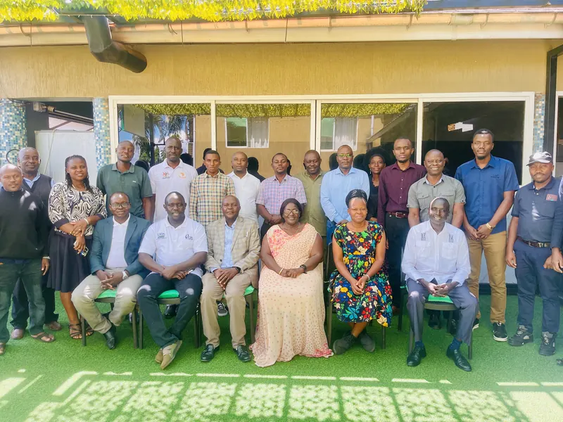
Featured
- Python
- Prophet
- NASA POWER API
Vanilla supply chain predictive analytics
- 18%
- MAE reduction
- 3
- Data sources combined
Forecasting system built on NASA POWER satellite data, ground measurements and market prices. Cut forecast MAE by 18%, and the findings went to MAAIF at the national workshop.
-
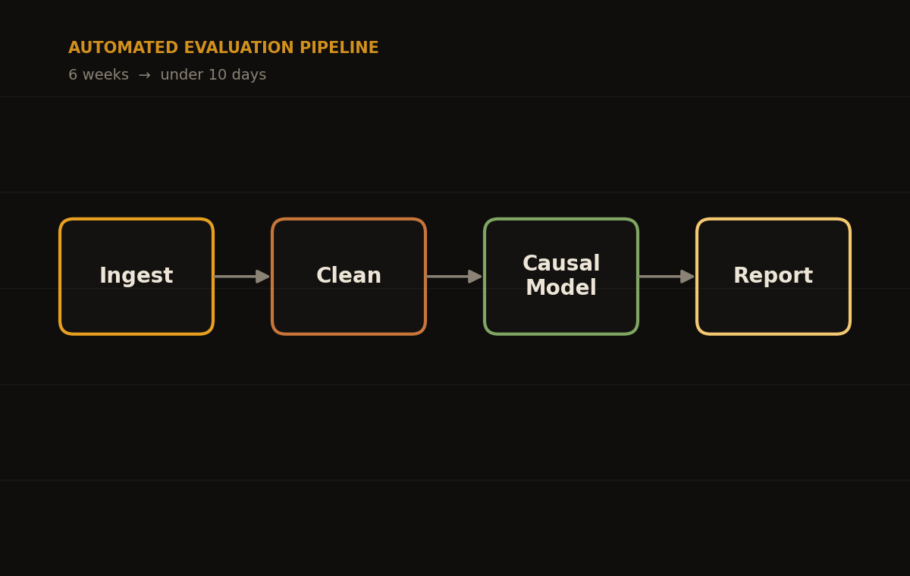
- Python
- Airflow
- PostgreSQL
Automated impact evaluation pipeline
- 10 days
- Cycle time, from 6 weeks
- 95%+
- Data quality
Python and Airflow pipeline covering ingestion, causal inference modelling and report generation. Evaluation cycles went from 6 weeks to under 10 days.
-
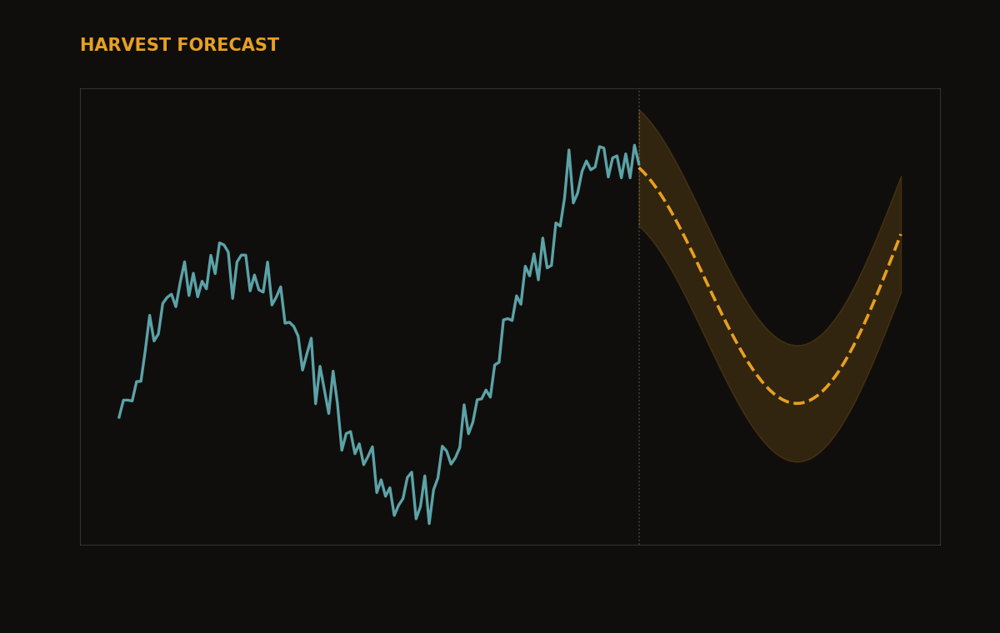
- Prophet
- ARIMA
- R
Hierarchical time-series forecasting
Hierarchical forecasting with Prophet and ARIMA for Ugandan vanilla yields. This is the method underneath the MAAIF harvest model, and what I presented at the national forum.
-
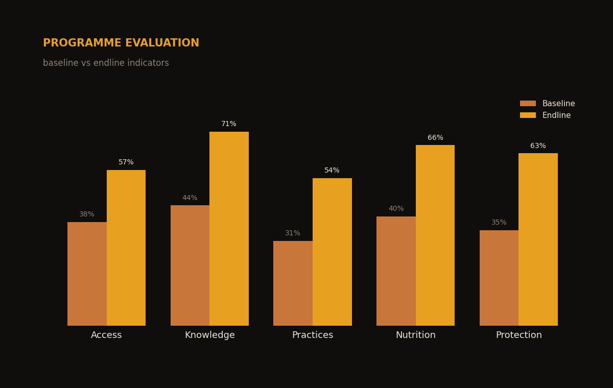
CRC
- SurveyCTO
- R
- Power BI
M&E evaluations for humanitarian clients
- 8
- UN agencies and NGOs served
- Full lifecycle
- Inception to reporting
The data side of impact and endline evaluations, KAP surveys and needs assessments for UN agencies and international NGOs (IRC, UNICEF, World Vision, Save the Children, Danish Refugee Council, Oxfam, GIZ) across Somalia and the Horn of Africa: tool design, SurveyCTO collection, data-quality checks, analysis, and the final reports that go to donors. Recent delivery includes the IRC MERP endline survey funded by the German Federal Foreign Office.
-
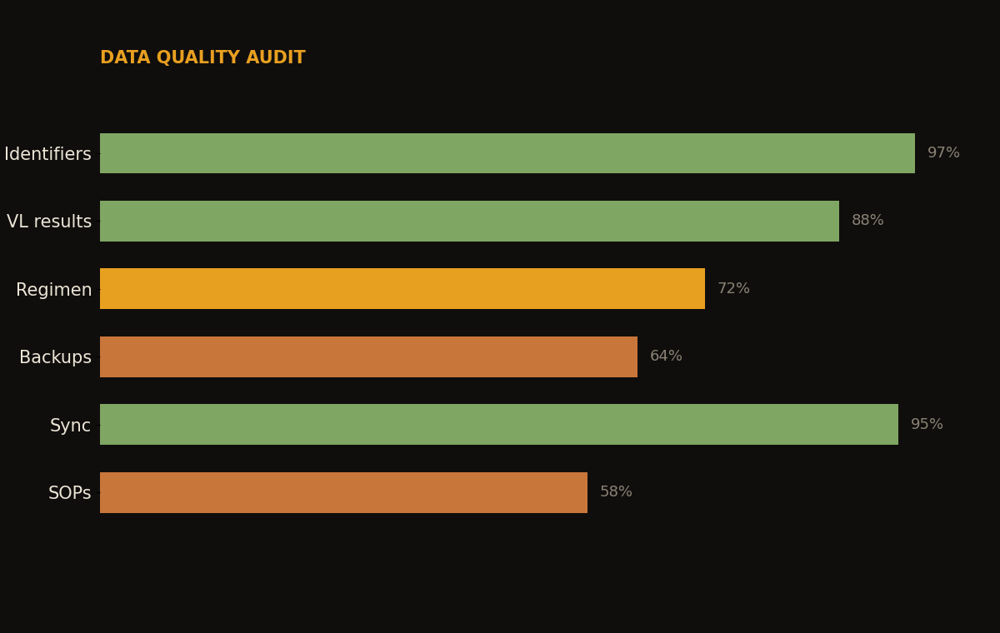
- SurveyCTO
- SQL
- Power BI
Malaria and HIV programme evaluation
- 95%+
- Data reliability
- 3
- Regions: Eastern, Central, Northern
With USAID SITES, the Ministry of Health and Makerere University, evaluated and audited USAID-funded health programmes in Uganda: President's Malaria Initiative activities, and the DHIS2 and electronic medical records transition for HIV care. Built the data-quality audits behind facility assessments across hospitals in the Eastern, Central and Northern regions.
-
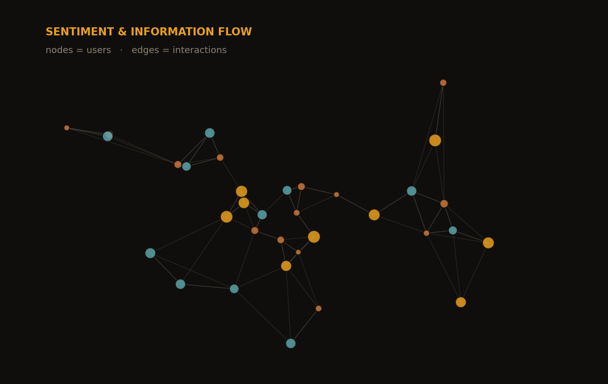
MSc capstone
- Python
- NLP
- Network analysis
Social-media sentiment and information flow
MSc Data Science capstone at MAHE. Sentiment analysis of social-media posts, plus a network model with users as nodes and their interactions as edges, to study how information spreads across the graph.
-
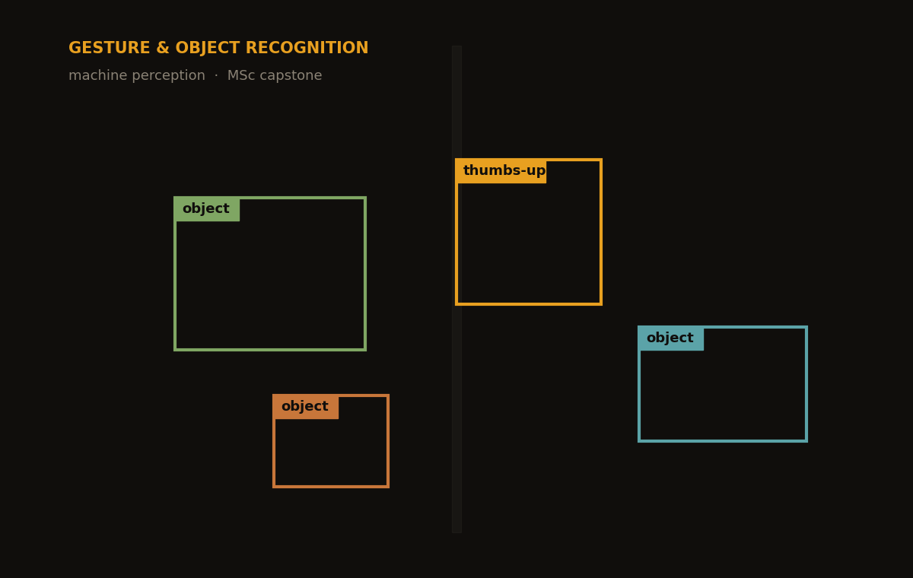
MSc capstone
- Python
- Computer vision
- Deep learning
Gesture and object recognition
MSc Data Science capstone at MAHE. Machine perception for robotics: reading hand gestures such as a thumbs-up and recognising objects from a camera feed, so a machine can work out what's in front of it.
-
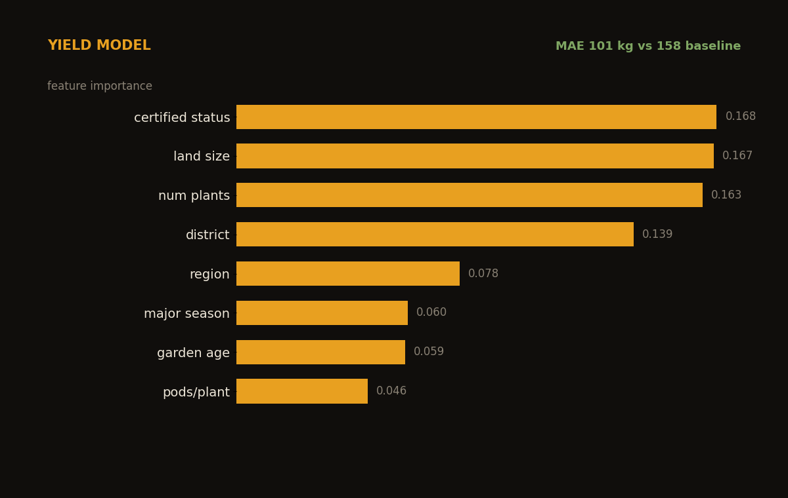
Enimiro
- Python
- scikit-learn
- Random forest
Vanilla yield estimation model
- 101 kg
- MAE, against a 158 kg baseline
- 14
- Farm features
Random-forest model predicting recorded harvest for 275 surveyed farmers, validated out-of-fold. It beats the median baseline by cutting MAE from 158 kg to 101 kg. Certification status, land size and plant count carry the most signal.
-
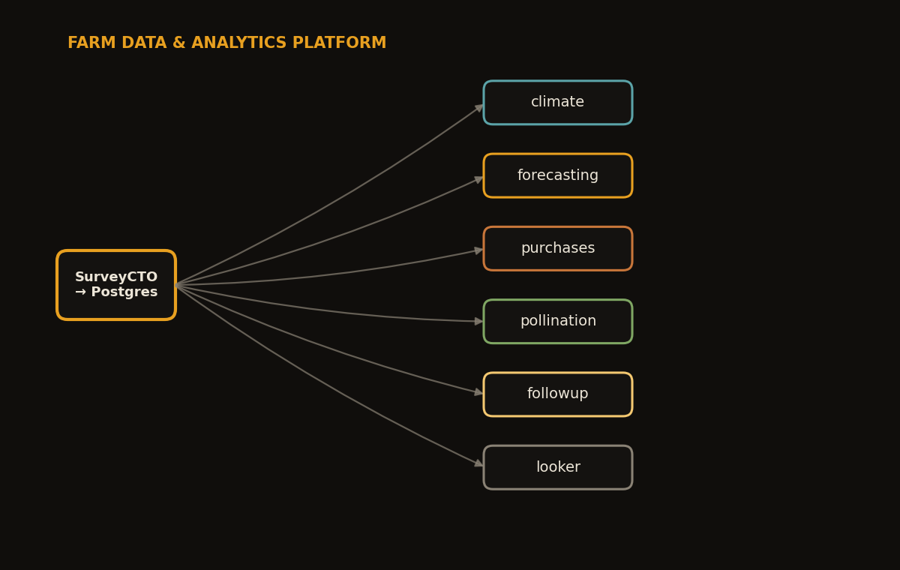
Enimiro
- Python
- PostgreSQL
- Prophet
Farm data and analytics platform
- 7
- Automated pipelines
- Python + R
- Orchestrated
The platform runs 7 scheduled pipelines: SurveyCTO-to-PostgreSQL ETL, NASA POWER climate scraping, Prophet harvest forecasts, purchase-loyalty analysis, pollination monitoring and inspection follow-ups, feeding Power BI and Looker dashboards.
-
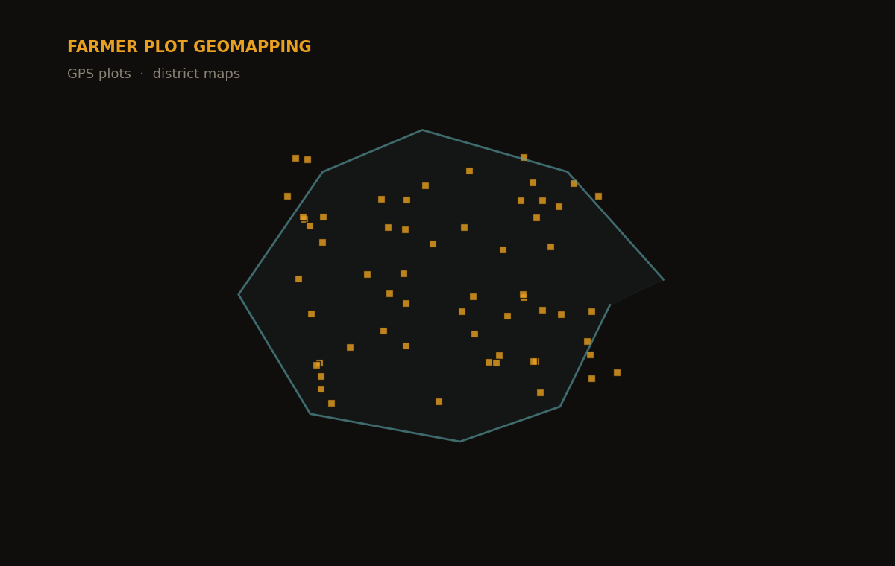
Enimiro
- GeoPandas
- Folium
- GeoJSON
Farmer plot geomapping
Turned GPS plot boundaries into interactive district maps for agrohub planning across Kayunga, Rubirizi and other districts. Static grids for print, browsable HTML maps of farmer plots for the field teams.
-
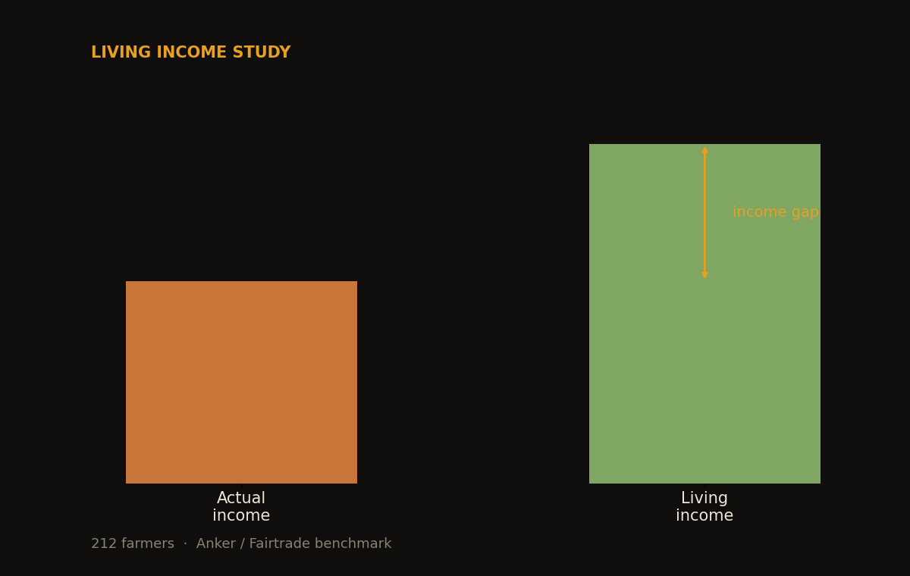
Enimiro
- Python
- R
- Anker method
Vanilla farmer living income study
- 212
- Farmers surveyed
- 485
- Variables cleaned
Measured the gap between what vanilla farmers earn and a living-income benchmark, using Anker and Fairtrade reference values. A modular Python and R pipeline cleaned 485 survey columns into an analysis-ready dataset and a written study.
-
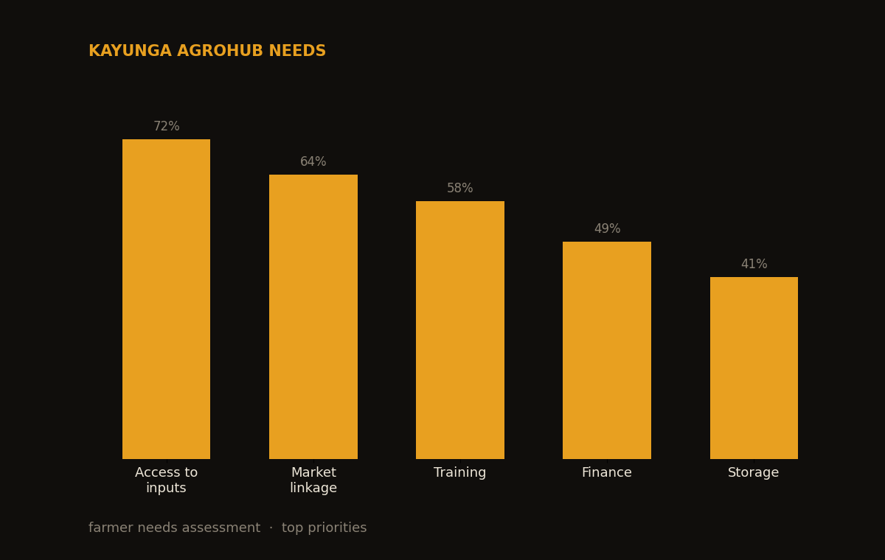
Enimiro
- Survey design
- Python
- Reporting
Kayunga agrohub needs assessment
Designed and analysed a farmer needs assessment for a planned agrohub in Kayunga, covering who was surveyed, vanilla production, income and the challenges farmers named, written up as a decision-ready report for management.
112 Use the arrows or swipe to move between projects
Live analytics
Agricultural analytics · illustrative simulation
Vanilla harvest season model
A simulated cohort of 1,000 vanilla farmers, calibrated to Uganda's real pollination and harvest calendar (January 2024 to June 2026). Vanilla beans take roughly 9 months to mature after hand-pollination, so the harvest line is the pollination curve shifted forward by 9 months. The main pollination season (September to November) drives the June and July main harvest; the secondary season (February to May) drives the December and January harvest.
- Main harvest window (Jun to Jul)
- Secondary harvest (Dec to Jan)
- Pollination activity
- Projected harvest (t+9 months)
Financial analytics · synthetic data
Transaction fraud detection model
Gradient-boosted risk scores across 2,000 synthetic bank transactions. Each point sits at its predicted risk score against transaction amount on a log scale, and the clustering shows how the model separates ordinary behaviour from suspicious and confirmed fraud. The dashed vertical line marks the 0.50 classification threshold.
- Legitimate
- Suspicious
- Confirmed fraud
- Threshold 0.50
Skills and sectors
Sectors
- Agriculture
- Agriculture and food security
- Education
- Public Health
- Malaria and HIV programs
- Health information systems (DHIS2 and EMR)
- Refugee Livelihood programs
- SRHR and GBV social norms
- Humanitarian response
- Finance and Loan performance
- Household Living Income
- Climate
Tools and where they were used
- Python
- The vanilla forecasting stack at MAAIF, the 7 Enimiro pipelines, and the random-forest yield model.
- R
- Evaluation analysis at CRC, and the living income study against Anker benchmarks.
- SQL and PostgreSQL
- The Enimiro farmer data warehouse, and the USAID SITES data-quality audits that held 95%+ reliability.
- Prophet and ARIMA
- Hierarchical harvest forecasts. This is where the 18% MAE reduction came from.
- Airflow
- Scheduling the impact evaluation pipeline that cut a 6-week cycle to under 10 days.
- Power BI and Looker
- Stakeholder dashboards at USAID SITES and Enimiro. Microsoft-certified Data Analyst Associate.
- SurveyCTO and ODK
- Field data collection for evaluations across Somalia and the Horn of Africa, and for every Enimiro farmer survey.
- GeoPandas and Folium
- District plot maps for agrohub planning in Kayunga and Rubirizi.
- Causal inference
- Impact and endline evaluations for IRC, UNICEF, World Vision, Save the Children and others.
Wider toolset
Languages
- Python
- R
- SQL
- Java
- Bash
ML and AI frameworks
- TensorFlow
- PyTorch
- scikit-learn
- statsmodels
- Prophet
- XGBoost
- Keras
Visualisation and BI
- Tableau
- Power BI
- Looker Studio
- ArcGIS
- Plotly
- D3.js
Data engineering
- Airflow
- Spark
- Hadoop
- Docker
- Git
- PostgreSQL
- MongoDB
Cloud and tooling
- AWS
- Azure
- Google Cloud
- Jupyter
- VS Code
- RStudio
Let's talk about a project
- Emailjohnsonmugarra@yahoo.com
- Phone+256 702 860 815
- GitHubgithub.com/MugarraJohnson
- LocationKampala, Central Region, Uganda

Testimonials
-
"Johnson's forecasts changed how we plan. He combined satellite data with our field measurements, and the results went straight into briefings at the highest levels of government."
Senior Research LeadMAAIF / Makerere University
-
"The pipeline Johnson built took our evaluation process from six weeks to under ten days. Our USAID reports now go out on schedule, with data we don't have to re-check."
Director of ResearchCenter for Research and Communication
-
"He understands qualitative and quantitative research. Johnson's thought process when tackling complex projects is both methodical and innovative."
SupervisorBronkar
Publications and presentations
-
Unravelling Yield and Yield-Related Traits in Soybean Using GGE Biplot and Path Analysis
Agronomy (MDPI) · 2024 · Vol. 14, Art. 2826 · Open access
Co-authored study evaluating the yield and stability of 12 elite soybean varieties across 5 production areas in Uganda, using GGE biplot and path analysis to identify the traits that improve yield in tropical breeding programmes.
- Peer-reviewed
- Statistical modelling
- Agronomy
-
Identifying Optimal Lines for Enhanced Symbiotic Performance in a Mini-Core Collection of Cowpea
Advances in Agriculture (Wiley) · 2025 · Open access
Co-authored study screening a mini-core cowpea collection for nitrogen fixation and symbiotic performance, applying statistical analysis to select superior genotypes for field evaluation across Ugandan agro-ecologies.
- Peer-reviewed
- Data analysis
- Agronomy
-
National forum presentation on agricultural analytics
National forum attended by H.E. President Yoweri Kaguta Museveni · April 2025 · Makerere University
Presented the vanilla supply-chain forecasting research: ML models combining satellite and ground data, a 30% gain in forecast accuracy, and specific recommendations for agricultural policy.
- ML / AI
- Policy impact
- Agriculture
-
Impact evaluation methodologies workshop
CRC Studies · 2025 · multiple stakeholder sessions
Ran technical workshops for programme evaluation teams for Somalia in relations to studies that sought to establish evidence of impact and align with causal inference concepts.
- Training
- Impact evaluation
- Capacity building
14 Use the arrows or swipe through publications
Education and certifications
Education
M.Sc. Data Science
Manipal Academy of Higher Education (MAHE), India
September: 2022 - October: 2024
Certifications
-
Project Management
Google certified
Professional Certificate
-
Power BI
Microsoft certified
Data Analyst Associate
-
SAS Statistics
SAS Institute
Statistical Business Analyst
-
Tableau
Tableau / Salesforce
Desktop Specialist